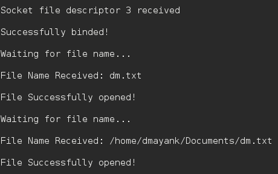

Data can be transferred between two computers using Socket programming in C.
Similarly, files can easily be sent using UDP protocol and a simple client/server.
Security : Handled by encryption.
Protocol : UDP
Encryption: XOR encryption
Algorithm :
1. The server starts and waits for filename. 2. The client sends a filename. 3. The server receives filename. If file is present, server starts reading file and continues to send a buffer filled with file contents encrypted until file-end is reached. 4. End is marked by EOF. 5. File is received as buffers until EOF is received. Then it is decrypted. 6. If Not present, a file not found is sent.
The Server :
// server code for UDP socket programming
#include <arpa/inet.h>
#include <netinet/in.h>
#include <stdio.h>
#include <stdlib.h>
#include <string.h>
#include <sys/socket.h>
#include <sys/types.h>
#include <unistd.h>
#define IP_PROTOCOL 0
#define PORT_NO 15050
#define NET_BUF_SIZE 32
#define cipherKey 'S'
#define sendrecvflag 0
#define nofile "File Not Found!"
// funtion to clear buffer
void clearBuf(char* b)
{
int i;
for (i = 0; i < NET_BUF_SIZE; i++)
b[i] = '\0';
}
// funtion to encrypt
char Cipher(char ch)
{
return ch ^ cipherKey;
}
// funtion sending file
int sendFile(FILE* fp, char* buf, int s)
{
int i, len;
if (fp == NULL) {
strcpy(buf, nofile);
len = strlen(nofile);
buf[len] = EOF;
for (i = 0; i <= len; i++)
buf[i] = Cipher(buf[i]);
return 1;
}
char ch, ch2;
for (i = 0; i < s; i++) {
ch = fgetc(fp);
ch2 = Cipher(ch);
buf[i] = ch2;
if (ch == EOF)
return 1;
}
return 0;
}
// driver code
int main()
{
int sockfd, nBytes;
struct sockaddr_in addr_con;
int addrlen = sizeof(addr_con);
addr_con.sin_family = AF_INET;
addr_con.sin_port = htons(PORT_NO);
addr_con.sin_addr.s_addr = INADDR_ANY;
char net_buf[NET_BUF_SIZE];
FILE* fp;
// socket()
sockfd = socket(AF_INET, SOCK_DGRAM, IP_PROTOCOL);
if (sockfd < 0)
printf("\nfile descriptor not received!!\n");
else
printf("\nfile descriptor %d received\n", sockfd);
// bind()
if (bind(sockfd, (struct sockaddr*)&addr_con, sizeof(addr_con)) == 0)
printf("\nSuccessfully binded!\n");
else
printf("\nBinding Failed!\n");
while (1) {
printf("\nWaiting for file name...\n");
// receive file name
clearBuf(net_buf);
nBytes = recvfrom(sockfd, net_buf,
NET_BUF_SIZE, sendrecvflag,
(struct sockaddr*)&addr_con, &addrlen);
fp = fopen(net_buf, "r");
printf("\nFile Name Received: %s\n", net_buf);
if (fp == NULL)
printf("\nFile open failed!\n");
else
printf("\nFile Successfully opened!\n");
while (1) {
// process
if (sendFile(fp, net_buf, NET_BUF_SIZE)) {
sendto(sockfd, net_buf, NET_BUF_SIZE,
sendrecvflag,
(struct sockaddr*)&addr_con, addrlen);
break;
}
// send
sendto(sockfd, net_buf, NET_BUF_SIZE,
sendrecvflag,
(struct sockaddr*)&addr_con, addrlen);
clearBuf(net_buf);
}
if (fp != NULL)
fclose(fp);
}
return 0;
}
The Client:
// client code for UDP socket programming
#include <arpa/inet.h>
#include <netinet/in.h>
#include <stdio.h>
#include <stdlib.h>
#include <string.h>
#include <sys/socket.h>
#include <sys/types.h>
#include <unistd.h>
#define IP_PROTOCOL 0
#define IP_ADDRESS "127.0.0.1" // localhost
#define PORT_NO 15050
#define NET_BUF_SIZE 32
#define cipherKey 'S'
#define sendrecvflag 0
// funtion to clear buffer
void clearBuf(char* b)
{
int i;
for (i = 0; i < NET_BUF_SIZE; i++)
b[i] = '\0';
}
// function for decryption
char Cipher(char ch)
{
return ch ^ cipherKey;
}
// function to receive file
int recvFile(char* buf, int s)
{
int i;
char ch;
for (i = 0; i < s; i++) {
ch = buf[i];
ch = Cipher(ch);
if (ch == EOF)
return 1;
else
printf("%c", ch);
}
return 0;
}
// driver code
int main()
{
int sockfd, nBytes;
struct sockaddr_in addr_con;
int addrlen = sizeof(addr_con);
addr_con.sin_family = AF_INET;
addr_con.sin_port = htons(PORT_NO);
addr_con.sin_addr.s_addr = inet_addr(IP_ADDRESS);
char net_buf[NET_BUF_SIZE];
FILE* fp;
// socket()
sockfd = socket(AF_INET, SOCK_DGRAM,
IP_PROTOCOL);
if (sockfd < 0)
printf("\nfile descriptor not received!!\n");
else
printf("\nfile descriptor %d received\n", sockfd);
while (1) {
printf("\nPlease enter file name to receive:\n");
scanf("%s", net_buf);
sendto(sockfd, net_buf, NET_BUF_SIZE,
sendrecvflag, (struct sockaddr*)&addr_con,
addrlen);
printf("\n---------Data Received---------\n");
while (1) {
// receive
clearBuf(net_buf);
nBytes = recvfrom(sockfd, net_buf, NET_BUF_SIZE,
sendrecvflag, (struct sockaddr*)&addr_con,
&addrlen);
// process
if (recvFile(net_buf, NET_BUF_SIZE)) {
break;
}
}
printf("\n-------------------------------\n");
}
return 0;
}
Output :
Server :

Client :